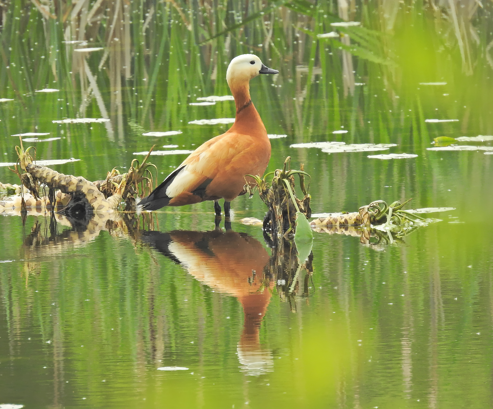

Tadorna ferruginea — From Atlas lakes to Levantine winters: not a visitor everywhere
Identity and identification
Ruddy Shelduck, Tadorna ferruginea, is a member of Anatidae whose classification is retained in AviList 2026. Its rusty-orange body, paler head and black bill and legs are conspicuous. The relatively large body and upright stance can suggest a goose, but this is neither a grey goose nor simply an unusually coloured domestic duck.
Age, sex and similar species
The adult male develops a narrow black neck ring in breeding plumage; the female lacks this ring and usually has a whiter face. Juveniles resemble females, so absence of the ring does not establish sex, especially outside the breeding season. In flight a broad white wing panel contrasts with black flight feathers, with a glossy green speculum. Common Shelduck instead combines a red bill with strongly patterned white, black and brown plumage. Identification photographs should include body, head and bill, since lighting alone can alter the apparent rusty colour.
Habitats, food and behaviour
The species uses lakes, open wetlands, slow rivers and water bodies in semi-arid country, including the mountain lakes of the Atlas. It eats grasses, aquatic plants and seeds, together with invertebrates such as insects, molluscs and crustaceans. Feeding takes place on land, along margins and in shallow water. Birds may occur as pairs or gather outside the breeding season. Their loud calls help attract attention, but apparent tolerance of people is not a reason to approach a family or nest.
Breeding and life cycle
Nests occupy cavities, burrows or suitable crevices and may be some distance from the water’s edge. The female incubates, after which both parents accompany the mobile young as they leave the nest. Breeding timing changes with region, altitude and water conditions; a single calendar should not be imposed on Atlas, Levantine and Asian birds. Some populations are resident or move relatively little, whereas others migrate. Winter numbers at a lake may therefore increase even where local breeding birds are already present.
Distribution and seasonality in the Arab world
In Morocco the species is not merely a winter visitor: official sources document local resident breeding at lakes such as Aguelmam Sidi Ali, while other birds use Atlas sites during winter. References also document breeding in parts of Algeria and Tunisia, without implying year-round occupation of every North African wetland. Egypt lies within passage and winter occurrence, while populations using Iraq and the Levant show different movements. Lebanon’s 2020 checklist changed its classification from vagrant to an infrequently observed winter visitor; Qatar treats it as a rare winter visitor. November thus offers opportunities to observe eastern winter arrivals, whereas an Atlas bird may be local. Unusual records should consider provenance, because captive or escaped individuals do not establish natural migration.
Ecological role and conservation
The global category is Least Concern, LC. By taking plants and invertebrates, the species links terrestrial grazing with aquatic habitats, but this category does not protect a small local population from habitat loss. Wetland drainage, pollution, disturbance and hunting are pressures, and breeding families need secure, quiet space. Maintaining water, varied shorelines and suitable nesting cavities is preferable to feeding birds to draw them into photographs. Calling a population resident neither grants hunting permission nor demonstrates stable numbers from year to year.
References
AviList 2026 — Tadorna ferruginea.
Parc national d’Ifrane — Tadorne casarca.
Moroccan biodiversity clearing-house — Aguelmam Sidi Ali et Aguelmam Ntifounassine.
Mediterranean Waterbirds Network — Ruddy Shelduck identification account and North African waterbird guide.
Ramadan-Jaradi and Itani — Birds of Lebanon: A Photographic Guide to 409 Species, UNDP, second edition, 2026; SPNL and Ramadan-Jaradi and colleagues — Lebanon checklist update, 2020.
Qatar eNature — Ruddy Shelduck.
Photo: Nicolás Tamargo — CC0-1.0.